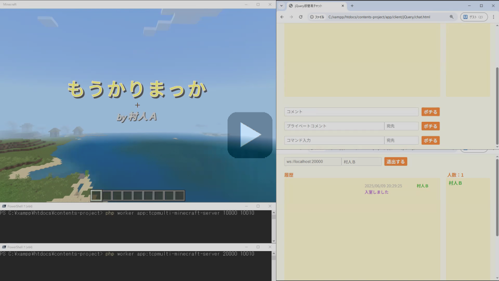
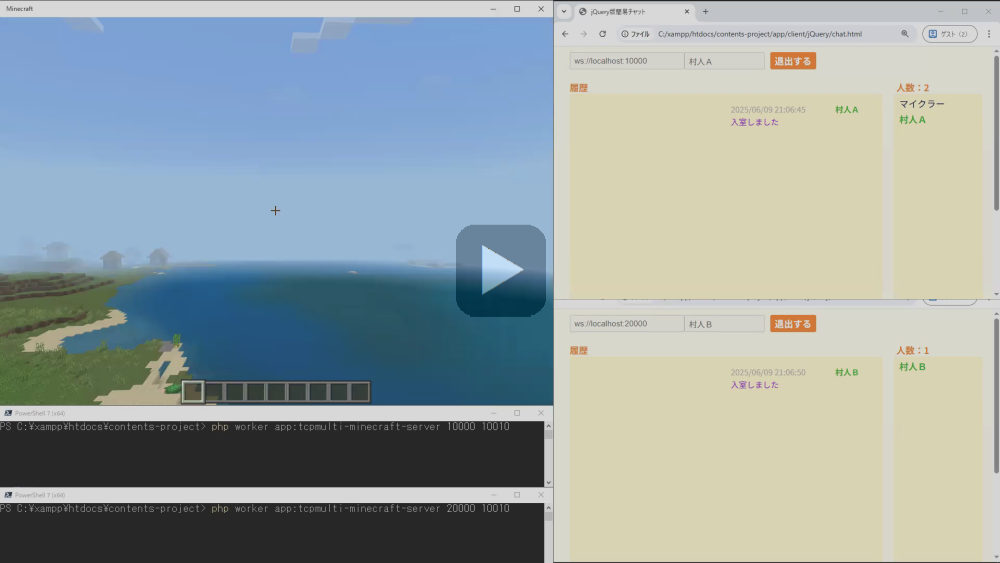
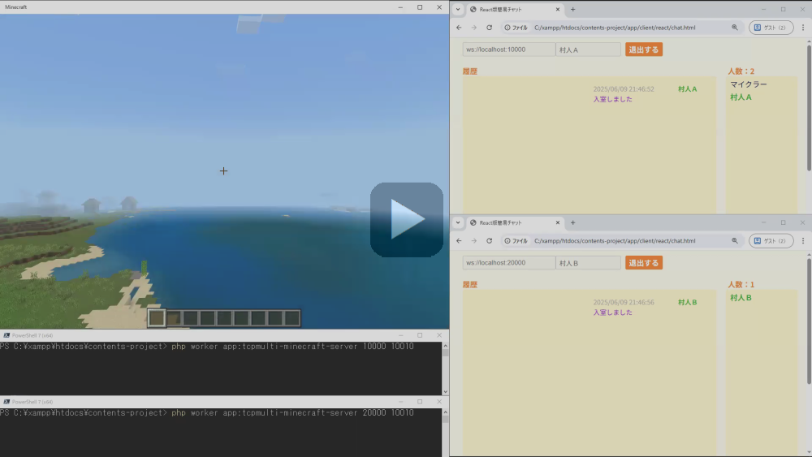

【サーバー間通信チャット】
はじめに
▶Webブラウザ間チャットのページではサーバーの単一プロセスによるチャットをご紹介しましたが、ここでは複合プロセスによるプライベートメッセージでのやり取りをご紹介します。
簡単に言えば、サーバープロセス単位で部屋割りをするチャット方式です。
ここでは以下の部屋割りと登場人物でメッセージのやり取りを行います。
簡単に言えば、サーバープロセス単位で部屋割りをするチャット方式です。
ここでは以下の部屋割りと登場人物でメッセージのやり取りを行います。
- 部屋番号：10000（ポート番号10000のサーバープロセス）
-
村人Ａ（ブラウザ）
マイクラー（マインクラフト） - 部屋番号：20000（ポート番号20000のサーバープロセス）
- 村人Ｂ（ブラウザ）
チャット動作
通常のチャット（ブラウザ⇔マインクラフト）
以下の画面は、同じチャット部屋で村人Ａ（ブラウザ）とマインクラフト間でメッセージ送信を行っている様子です。
１）「村人Ａ」からのメッセージ「もうかりまっか」を送信
２）「マイクラー」からのメッセージ「ぼちぼちでんな」を送信
サーバー間チャット（ブラウザ⇔ブラウザ）
以下の画面は、異なるチャット部屋で村人Ａ（ブラウザ）と村人Ｂ（ブラウザ）間でプライベートメッセージ送信を行っている様子です。
１）「村人Ａ」からのメッセージ「邪魔するでー」を送信
２）「村人Ｂ」からのメッセージ「邪魔するんやったら帰ってー」を送信
サーバー間チャット（ブラウザ⇔マインクラフト）
以下の画面は、異なるチャット部屋で村人Ｂ（ブラウザ）とマインクラフト間でプライベートメッセージ送信を行っている様子です。
１）「村人Ｂ」からのメッセージ「トイレかしてー」を送信（マインクラフト側ではウィスパーとして表示）
２）「マイクラー」からのメッセージ「かりるんやったら返してー」を送信（＜メッセージ＞#＜ユーザー名＞形式で送信）
サーバーの起動方法
TCP通信によるサーバー間通信（IPC）の場合
サーバー間通信用の親サーバーのポート番号は10010とします。WebsocketサーバーはTCP通信のため、ポート番号をサーバー間通信用のものと被らないようにする必要があります。
> php worker app:tcpmulti-minecraft-server 10000 10010
第一パラメータ：10000（クライアント通信ポート）、第二パラメータ：10010（サーバー間通信ポート）
> php worker app:tcpmulti-minecraft-server 20000 10010
第一パラメータ：20000（クライアント通信ポート）、第二パラメータ：10010（サーバー間通信ポート）UDP通信によるサーバー間通信（IPC）の場合
サーバー間通信用の親サーバーのポート番号は10000とします。TCP通信とUDP通信とではソケットリソースが異なるため、サーバー間通信用のものと同じポート番号が利用できます。
> php worker app:udpmulti-minecraft-server 10000 10000
第一パラメータ：10000（クライアント通信ポート）、第二パラメータ：10000（サーバー間通信ポート）
> php worker app:udpmulti-minecraft-server 20000 10000
第一パラメータ：20000（クライアント通信ポート）、第二パラメータ：10000（サーバー間通信ポート）